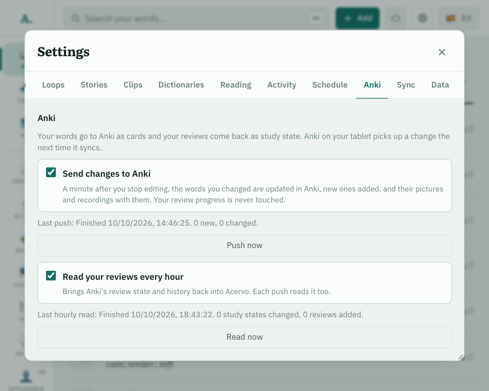

Front
Back
How the cards travel
←
Acervoyour entries, pictures and recordings
→←
Anki sync serverAnki's own, running beside Acervo on your machine
⇄
Anki on your phone or tabletsyncs as it always does
→ Cards out: a card for each meaning, with its sentence, picture and recordings, updated when the entry changes.
← Reviews back: every hour, Anki's memory state for each card, so the word list can show which words are hardest.
← Reviews back: every hour, Anki's memory state for each card, so the word list can show which words are hardest.

Content goes one way and statistics the other, never both: your review progress is never touched, and Anki never edits an entry.